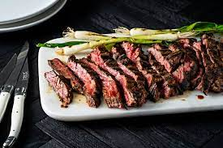

Ribeye Steak

Description
This is my favorite steak recipe and it has all the best stuff.
Ingredients
The ingredients are pretty standard. Please see below.
- Organic & Grass-fed Ribeye Steak
- Butter
- Salt
- Pepper
Instructions to make
- Heat pan with butter on high heat
- When hot, put steak into pan
- Add Salt and Pepper to your liking
- Add more butter on top until cooked